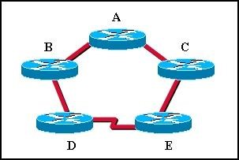
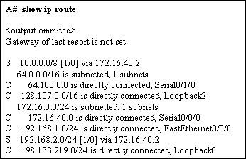
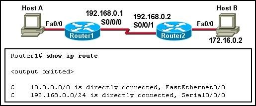
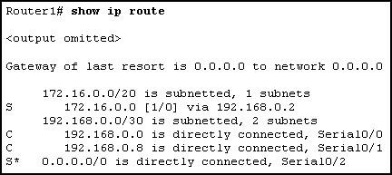
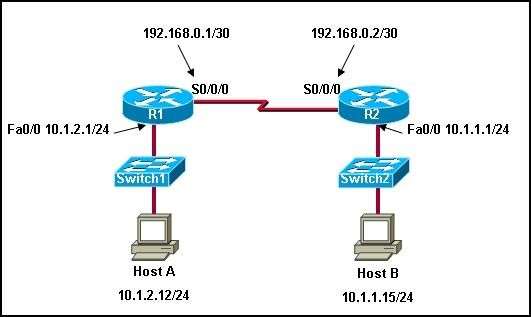
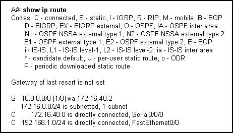
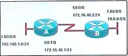

Chapter 2 – CCNA 2
01.A network administrator enters the following command into Router1: ip route 192.168.0.0 255.255.255.0 S0/1/0. Router1 then recives a packet that is destined for 192.168.0.22/24. After finding the recently configured static route in the routing table, what does Router1 do next to process the packet?
- Drops the packet because the destination host is not listed in the routing table;
- Looks up the MAC address of the S0/1/0 interface to determine the destination MAC address of the new frame;
- Performs a recursive lookup for the IP address of the S0/1/0 interface to determine the destination MAC address of the new frame;
- Performs a recursive lookup for the IP address of the S0/1/0 interface before forwarding the packet;
- Encapsulates the packet into a frame for the WAN fink and forwards the packet out S0/1/0 interface.
02.Refer to the exhibit. Which set of commands will configure static routes that will allow the WinterPark and the Allamonte routers to deliver packets from each LAN and direct all other traffic to the Internet?
- WinterPark(config)#ip route 0.0.0.0 0.0.0.0 192.168.146.1;
Altamonte(config)#ip route 10.0.234.0 255.255.255.0 192.168.146.2
Altamonte(config)#ip route 0.0.0.0 0.0.0.0 s0/1
- WinterPark(config)#ip route 0.0.0.0 0.0.0.0 192.168.146.1;
Altamonte(config)#ip route 10.0.234.0 255.255.255.0 192.168.146.2
Altamonte(config)#ip route198.18.222.0 255.255.255.255 s0/1
- WinterPark(config)#ip route 172.191.67.0 255.255.255.0 192.168.146.1
WinterPark(config)#ip route 0.0.0.0 0.0.0.0 192.168.146.1
Altamonte(config)#ip route 10.0.234.0 255.255.255.0 192.168.146.2
- WinterPark(config)#ip route 172.191.67.0 255.255.255.0 192.168.146.1
Altamonte(config)#ip route 10.0.234.4 255.255.255.0 192.168.146.2
Altamonte(config)#ip route 0.0.0.0 0.0.0.0 s0/0
03.  Which of the following is true regarding CDP and the graphic shown?
- CDP running on Router D will gather information about routers A,B,C, andE;
- By default, Router A will receive CDP advertisments from routers B and C;
- If routers D and E are running different routing protocols, they will not change CDP information;
- Router E can use CDP to identify the IOS running on Router B.
04.  Refer to the exhibit. What two commands will change the next-hop address for the 10.0.0.0/8 network from 172.16.40.2 to 192.168.1.2 ? (Choose two)
- A(config)#no network 10.0.0.0 255.0.0.0 172.16.40.2;
- A(config)#no ip address 10.0.0.1 255.0.0.0 172.16.40.2;
- A(config)#no ip route 10.0.0.0 255.0.0.0 172.16.40.2;
- A(config)#ip route 10.0.0.0 255.0.0.0 s0/0;
- A(config)#ip route 10.0.0.0 255.0.0.0 192.168.1.2
05.  Refer to exhibit. Which static route should be configured on Router1 so that host A will be able to reach host B on the 172.16.0.0 network?
- ip route 192.168.0.0 172.16.0.0 255.255.0.0;
- ip route 172.16.0.0 255.255.0.0 192.168.0.1;
- ip route 172.16.0.0 255.255.0.0 S0/0/1;
- ip route 172.16.0.0 255.255.0.0 S0/0/0.
06.Which piece of information is available from examining the ouput of the command show ip interface brief ?
- Interface speed and duplex;
- Interface MTU;
- Errors;
- Interface MAC address;
- Interface IP address.
07.Which address can be used to summarize networks 172.16.0.0/24, 172.16.7.0/24 ?
- 172.16.0.0/21;
- 172.16.1.0/22;
- 172.16.0.0 255.255.255.248;
- 172.16.0.0 255.255.252.0
08.Hosts on two separate subnets cannot communicate. The network administrator suspects a missing route in one of the routing tables. Which three commands can be used to help troubleshoot Layaer3 connectivity issues? (Choose three)
- Ping;
- Show arp;
- Traceroute;
- Show ip route;
- Show controllers;
- Show cdp neighbor.
09. Refer to the exhibit. Given the ouput in the exhibit, how would a clock rate be determined for this link?
- The rate would be negotiated by booth routers;
- A rate would not be selected due to the DCE/DTE connection mismatch;
- The rate configured on the DTE determines the clock rate;
- The rate configured on the DCE determines the clock rate.
10.  Refer to the exhibit. How will packets destined to the 172.16.0.0 network be forwarded?
- Router1 will perform recursive lookup and packet will exit S0/0;
- Router1 will perform recursive lookup and packet will exit S0/1;
- There is no matching interface associated with network 172.16.0.0 so packets will be dropped;
- There is no matching interface associated with network 172.16.0.0 so packets will take gateway of last resort and exit out S0/2.
11. A static route that points to the next hop IP will have what administrative distance and metric in the routing table?
- Administrativedistance of 0 and metric of 0;
- Administrative distance of 0 and metric of 1;
- Administrative distance of 1 and metric 0;
- Administrative distance of 1 and metric of 1.
12.  Refer to the exhibit. A company network engineer is assigned to establish connectivity between the two Ethernet networks so that hosts on the 10.1.1.0/24 subnet can contact hosts on the 10.1.2.0/24 subnet. The engineer has been told to use only static routing for these company routers. Which set of commands will establish connectivity between the two Ethernet networks?
- R1(config)# ip route 10.1.2.0 255.255.255.0 192.168.0.1
R2(config)# ip route 10.1.1.0 255.255.255.0 192.168.0.2
- R1(config)# ip route 10.1.2.0 255.255.255.0 192.168.0.2
R2(config)# ip route 10.1.1.0 255.255.255.0 192.168.0.1
- R1(config)# ip route 10.1.1.0 255.255.255.0 192.168.0.2
R2(config)# ip route 10.1.2.0 255.255.255.0 192.168.0.1
- R1(config)# ip route 10.1.1.0 255.255.255.0 192.168.0.1
R2(config)# ip route 10.1.2.0 255.255.255.0 192.168.0.2
- R1(config)# ip route 0.0.0.0 0.0.0.0 10.1.2.1
R2(config)# ip route 0.0.0.0 0.0.0.0 10.1.1.1
13. Why is it advisable to enter a next-hop IP address when creating a static route whose exit interface is an Ethernet network?
- Adding the next-hop address eliminates the need for the router to do any lookups in the routing table before forwarding a packet;
- In a multi-access network, the router cannot determine the next-hop MAC address for the Ethernet frame whitout a next-hop address;
- Using a next-hopaddress in a staticroute provides a route with a lower metric;
- In multi-access networks, using a next-hop address in a static route makes that route a candidate default route.
14. What happens to a static route entry in a routing table when the outgoing interface is not available?
- The route is removed from the table;
- The router polls neighbors for a replacent route;
- The route remains in the table because it was defined as static;
- The router redirects the static route to compensate for loss of the next hop device.
15.  Refer to the exhibit. What is the significance of the /8 in route to the 10.0.0.0 network?
- It indicates that there are 8 hops between this router and the 10.0.0.0 network;
- It represents the time, in miliseconds, it takes for a ping to reply when sent to the 10.0.0.0 network;
- It indicates that there 8 subnets in the destination network to wich the router can forward packets;
- It indicates the number of consecutive bits, from the left, in the destination IP address of a packet thet must match 10.0.0.0 to use that route.
16. Which two statements describe functions or characteristics of CDP (choose two)
- It starts up automaticaly and allows the device to detect directly connected neighbor devices that use CDP;
- It operates at the network layer and allows two system to learn about each other;
- It creates a topology map of the entire network;
- It allows system to learn about each other even different network layer protocols are configured;
- It forwards advertisments about routes for faster convergence.
17. A router has one static route configured to each destination network. Which two scenarios would require an administrator to after the static routes that are configured on that router? (choose two)
- The destination network no longer exists;
- The destination network is moved to a different interface on the same router;
- The path between the source and destination is upgraded with a higher bandwith link;
- The remote destination network interface has to be down for 15 minutes of maitenance;
- A topology change occurs where the existing next-hop address or exit interface is not accesible.
18.  Refer to the exhibit. What two commands are required to provide connectivity between the 192.168.1.0 and 10.0.0.0 networks whithout requiring recursive lookup? (Choose two)
- A(config)#ip route 10.0.0.0 255.0.0.0 s0/1/0
- A(config)#ip route 10.0.0.0 255.0.0.0 172.16.40.2
- A(config)#ip route 10.0.0.0 255.0.0.0 s0/0/0
- B(config)#ip route 192.168.1.0 255.255.255.0 s 0/0/0
- B(config)#ip route 192.168.1.0 255.255.255.0 172.16.40.1
- B(config)#ip route 192.168.1.0 255.255.255.0 s0/1/0
19. Which of the following are displayed by the Router# show cdp neighbors command? (Choose three)
- Load;
- Platform;
- Reliability;
- Holdtime;
- Local interface.
20. The ouput of the Router# show interfaces serial0/1 command displays the following: Serial0/1 is up, line protocol is down ; What is the most likely cause for the line protocol being down?
- Serial0/1 is shutdown;
- There is no cable connecting the routers;
- The remote router is using serial0/0;
- No clock rate has been set.
21. What two devices are responsible for converting the data from the WAN service provider into a form acceptable by the router? (Choose two)

{kind=link}
{kind=link}
{kind=link}
{kind=link}
{kind=link}
{kind=link}
{kind=link}
{kind=link}